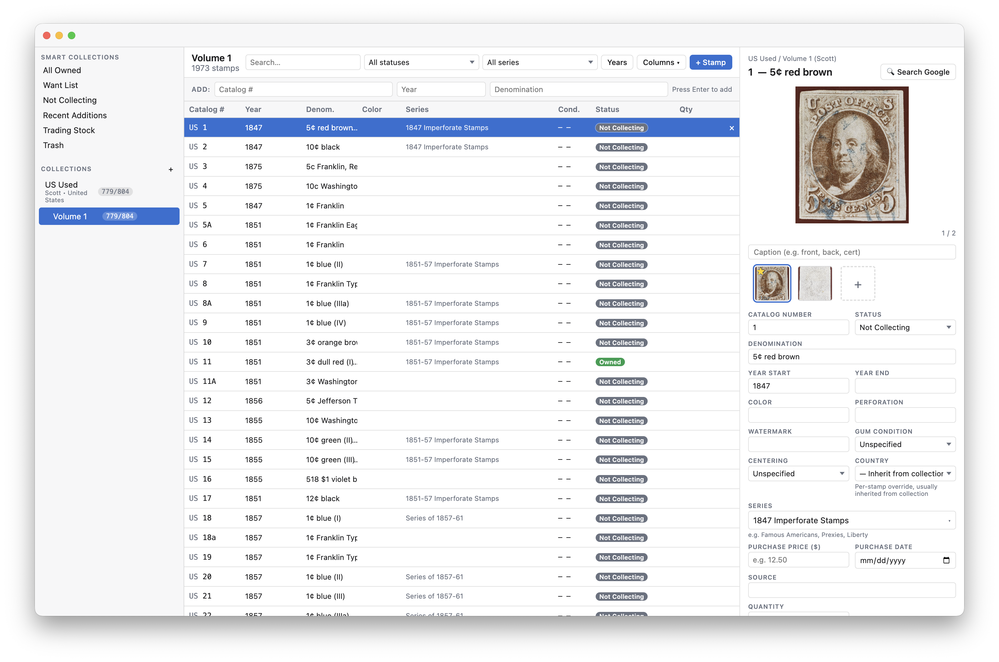

Hinged is a desktop app for cataloging stamp collections. Smart Collections, series tracking, bulk editing, gap analysis, statistics, CSV import, printable want lists, multi-image galleries — running locally on your machine, with the source on GitHub. No subscription. Ever.
Sidebar tree on the left, filterable stamp list in the middle, full editing form on the right. Click any row, search the catalog, filter by status. Everything stays in sync.

Bring in your existing inventory from CSV. Pick how to handle duplicates — skip, update, or create new entries — and Hinged drops everything into the album you've selected.
Build collections around any catalog. Tag stamps as Owned, Want, or Not Collecting. Smart Collections update themselves. Bulk-edit hundreds of stamps with click and shift-click.
Run gap analysis and the statistics dashboard to see what's missing and what you've built. Add purchase prices to track value. Print a want list for your next stamp show. Auto-backup keeps a rolling history.
Hinged is signed with an Apple Developer ID and notarized, so macOS opens it like any other app — no Gatekeeper warnings.
Hinged isn't yet code-signed for Windows. The SmartScreen warning is normal for unsigned apps.
chmod +x then double-click.sudo apt install ./hinged_*.debYes. No subscriptions, no upsells, no ads. The source code is on GitHub under the GNU GPL v3 license, and the app stays free forever. Fork it, audit it, or build your own — provided your fork stays open under the same terms.
Catalog data — every stamp's number, year, denomination, color, design — is copyrighted by the publisher and licensed expensively to commercial software. Including any of it in Hinged would mean either paying licensing fees that would force the app to stop being free, or shipping copyrighted data without permission. Neither is acceptable.
A future version of Hinged will support importing user-built catalog templates so the community can share their own work, but Hinged itself will never ship third-party catalog data.
~/Library/Application Support/Hinged/%APPDATA%\Hinged\~/.config/Hinged/Inside that folder you'll find hinged.db (a SQLite database) and an Images/ subdirectory. Back it up by copying the folder, or use File → Export Backup for a portable JSON snapshot.
Hinged itself doesn't include cloud sync, but the data folder is small and lives in a stable location. The simplest approach is to point your iCloud, Dropbox, OneDrive, or similar at it — though only run Hinged on one machine at a time to avoid sync conflicts. For a more deliberate workflow, export a .hinged backup before switching machines and import it on the other side.
On macOS, yes — Hinged is signed with an Apple Developer ID and notarized by Apple, so it launches cleanly on first run with no warnings. On Windows, not yet; you'll see a SmartScreen warning the first time you run the installer (click More info → Run anyway). Linux binaries don't have an equivalent signing system.
Yes. Deleted stamps go to Trash (visible in the sidebar). Click any stamp there and Restore, or select multiple and restore them in bulk. Stamps stay in trash until you click Empty Trash.
If you accidentally deleted a whole album or collection, those go away permanently — but if auto-backup is configured, you can restore the most recent backup via File → Import Backup (Replace).
The app is local-first and has no server dependencies, so the version you have installed will keep running for a long time. Your data is in standard formats (SQLite, JSON, PNG), so it'll outlive the app even in the worst case. And the source is on GitHub — anyone can pick up maintenance, fork it, or build a successor.
Open an issue on GitHub. Bug reports with steps to reproduce and feature requests with concrete use cases are especially helpful.
I started collecting stamps as a kid, and back in the 1980s I wrote a similar program in BASIC for my own collection — partly because I enjoyed writing programs, and partly because I couldn't afford the commercial software. I gave it away as freeware: send me a disk and a pre-paid mailer, and I'd send the program back. I fulfilled hundreds of those requests.
The stamp software that exists today is mostly Windows-only, tries to do too much, and the interfaces feel a generation behind. I wasn't going to run any of it under emulation just to catalogue my collection. Hence Hinged.
Hinged is free for the same reason that BASIC program was free. Charging for it would defeat the point. There's no business model here. If you find it useful, the only thing I ask is that you let me know — open an issue, send a note. This is a tool I use every day; it gets better when other collectors use it too.